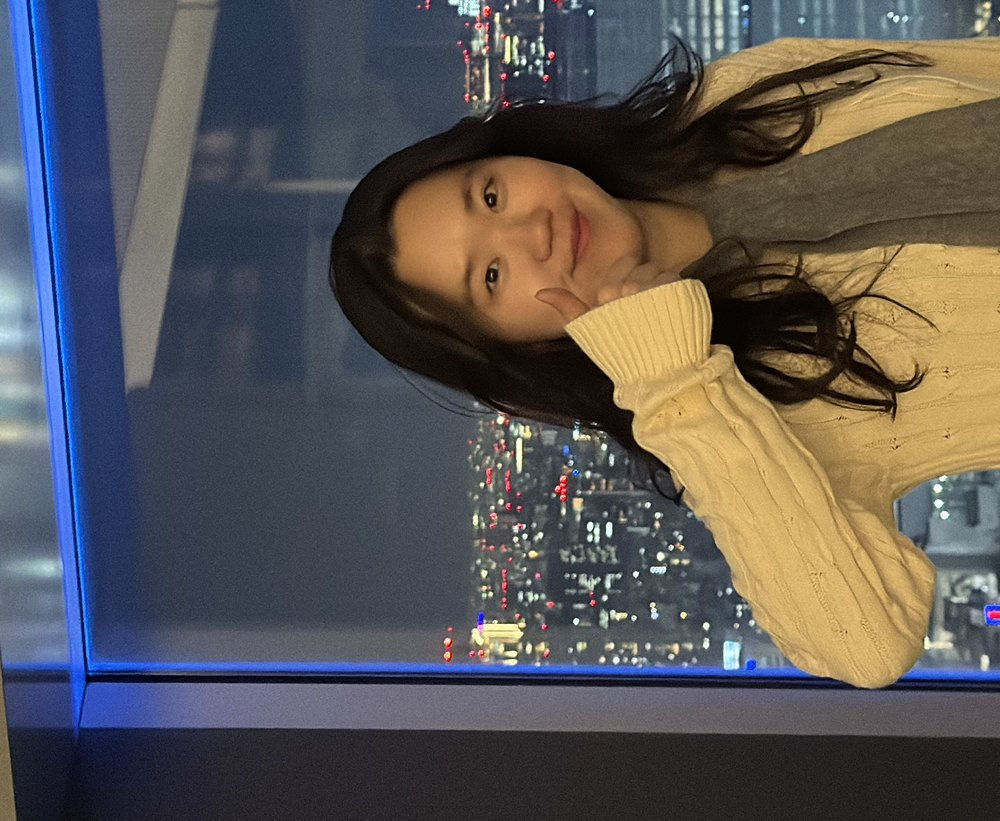

임연주
Yeonjoo LimKT · 네트워크부문 네트워크연구소
주요 업무
업무 효율화를 위한 프로세스 자동화
2025.09 – 2025.12
ERP 자산 수집과 리포트 메일 발송을 자동화하고, 교육·컴플라이언스와 자산 점검 미이행 리포트를 만들었다.
연구소 자산·보안 관리 체계 총괄
2025.04 – 2025.10
장비 위치 현행화와 불용 장비 정리를 총괄하고, 전사 보안 점검 대응과 정비 가이드를 연구소 단위로 맡았다.
학회·컨퍼런스 전시 기획
2025.01 – 2025.03
MWC 2025 글로벌 연구소 6개 기술 전시·시연 부스를 만들고, 학회 특별세션 2건과 표준 특허 세미나를 기획했다.
가상화 보안 거버넌스 대응
2024.08 – 2024.12
오픈소스 SW 방화벽(VM)을 현장에 적용하고 정책 제어 API 12종을 개발해 상용화했다. 운용 교육 1회.
가상화 IT 거버넌스 대응
2024.04 – 2024.09
가상화 자산 관리(KINGS)를 설계·개발해 상용화하고, 전사 IT자산식별체계(ITAM)와 연동했다. 단위서비스 2종.
가상화 인프라 구축 자동화
2024.01 – 2024.03
KOSMOS 구축과 서버 보안(SMP) 조치를 자동화해 클러스터 구축을 2시간에서 30분으로 줄였다(75%). 단위서비스 3종.
클라우드 인프라 KPI 모니터링
2023.04 – 2025.08
EFK로 KPI 수집·검색·시각화를 내재화하고, 가상화 플랫폼에서 5G Core CNF 연동을 검증했다.
가상화 플랫폼 SW 방화벽
2023.09 – 2023.12
가상화 플랫폼용 SW 방화벽과 가상 전환 운용 SW의 상태 관리·제어를 개발하고 PoC로 검증했다.
서버·네트워크 가상화 전환
2023.01 – 2025.03
운용서버 가상화 플랫폼과 Legacy 장비의 VM 전환(P2V)을 개발하고, 상용 서비스(IM) 가상 전환 PoC UI를 만들었다.
경력
KT
2023.12 – 현재
KT
2022.04 – 2023.11
세종대학교 PEL
2019.02 – 2021.08
Zeppelin
2018.07 – 2018.08
세종대학교 PEL
2016.06 – 2018.02
연구
모바일 에지 컴퓨팅 플랫폼
- 컨테이너 서명·검증과 마이그레이션으로 MEC 간 핸드오프 지연을 74.3% 줄였다(0.514초).
블록체인 펌웨어 업데이트·전력거래
- Hyperledger Fabric 펌웨어 배포와 이더리움 경매형 전력거래를 구현했다.
학력
세종대학교
2021
Container Security Framework and MEC Application Relocation for 5G Infrastructure
상명대학교
2019
수상 · 자격
2018
2017
기술
- Golang
- Kubernetes
- Docker
- JavaScript
- PHP
- C
- Linux
논문
국제 저널
Yeonjoo Lim, Jong-Hyouk Lee. Container-based Service Relocation for Beyond 5G Networks. Journal of Internet Technology, 23(4), 911–918, 2022.
국내 저널
임연주, 이종혁. 5G MEC 환경에서의 도커 마이그레이션 테스트베드 및 실험 시나리오. OSIA Standards & Technology Review, 33(2), 26–30, 2020.
학술대회
박재형, 임연주, 이종혁. 무인항공기 시스템의 제어 통신을 위한 MAVLink 프로토콜 분석. 한국정보보호학회 충청지부 학술대회, 2021.
학술대회
임연주, 이종혁. 컨테이너 환경에서의 이미지 취약점 탐지 및 서명/검증 모델 설계. 융합스마트미디어 시스템 워크샵, 2019.
학술대회
최창준, 임연주, 송영준, 이종혁. 이더리움 확장성 문제 해결을 위한 Off-Chain 솔루션 분석. 한국통신학회 동계종합학술발표회, 2019.
학술대회
임연주, 명세인, 권순홍, 이종혁. 블록체인 기반 마이크로그리드 전력거래 시스템. 한국통신학회 동계종합학술발표회, 2018.
학술대회
송영준, 전상기, 임연주, 이종혁. Shadow Brokers에 의해 유출된 NSA 윈도우 해킹 툴 분석. 한국정보보호학회 하계학술발표회, 2017. 우수논문상.
학술대회
이부형, 임연주, 이종혁. 블록체인 플랫폼에서의 합의 알고리즘. 한국통신학회 동계학술발표회, 2017.